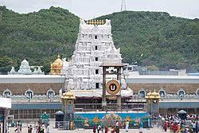
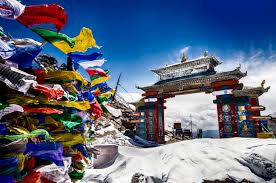
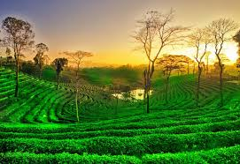
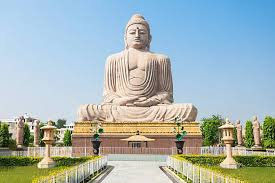

Capital: Amaravati
Andhra Pradesh is known for its rich cultural heritage, historical landmarks, and beautiful beaches. Famous for the Tirupati Temple.
Capital: Itanagar
Arunachal Pradesh is famous for its scenic landscapes, diverse flora and fauna, and Tibetan cultural influences, with Tawang Monastery.
Capital: Dispur
Assam is renowned for its tea gardens, wildlife sanctuaries, and vibrant festivals. Kaziranga National Park is famous for rhinos.
Capital: Patna
Bihar is known for being the birthplace of Buddhism, with sites like Bodh Gaya attracting global pilgrims.
Capital: Raipur
Chhattisgarh is famous for its natural beauty, mineral resources, and tribal culture, with ancient temples and wildlife sanctuaries.
Capital: Panaji
Goa is famous for its beaches, Portuguese architecture, vibrant nightlife, and cultural fusion reflected in festivals and music.
Capital: Gandhinagar
Gujarat is known for landmarks like the Statue of Unity, rich cultural traditions, colorful festivals, and delicious cuisine.
Capital: Chandigarh
Haryana is a hub for agriculture and home to Kurukshetra, a region of great religious significance in Hindu mythology.
Capital: Shimla
Himachal Pradesh is known for its stunning landscapes, hill stations like Manali, and adventure tourism activities.
Capital: Ranchi
Jharkhand is rich in natural resources, known for dense forests, waterfalls, and indigenous tribal culture.
Capital: Bengaluru
Karnataka is famous for its historical landmarks, stunning temples, and modern cities like Bengaluru. Hampi's ruins are a UNESCO World Heritage site.
Capital: Thiruvananthapuram
Known as "God's Own Country," Kerala is famous for its backwaters, Ayurveda, hill stations, and cultural festivals like Onam.
Capital: Bhopal
Madhya Pradesh is home to the UNESCO World Heritage site Khajuraho, wildlife sanctuaries, and significant temples.
Capital: Mumbai
Maharashtra is the financial capital of India, home to Bollywood, Ajanta and Ellora caves, and beautiful beaches like Alibaug.
Capital: Imphal
Manipur is known for its classical dance form Manipuri, colorful festivals, and scenic beauty.
Capital: Shillong
Meghalaya is famous for its living root bridges, scenic landscapes, and being the "Abode of Clouds."
Capital: Aizawl
Mizoram is known for its picturesque hills, rich cultural traditions, and the vibrant Mizo festivals.
Capital: Kohima
Nagaland is home to several indigenous tribes, and its cultural heritage is rich in folk traditions, festivals, and wildlife.
Capital: Bhubaneswar
Odisha is famous for the Sun Temple of Konark, pristine beaches, and the annual Rath Yatra festival.
Capital: Chandigarh
Punjab is known for its agricultural abundance, the Golden Temple in Amritsar, and vibrant festivals like Baisakhi and Lohri.
Capital: Jaipur
Rajasthan is famous for its royal palaces, forts, and desert landscapes. Udaipur and Jodhpur are must-see destinations.
Capital: Gangtok
Sikkim is known for its stunning landscapes, Himalayan peaks, Buddhist monasteries, and rich biodiversity.
Capital: Chennai
Tamil Nadu is renowned for its ancient temples, classical dance forms like Bharatanatyam, and the famous Kanchipuram silk sarees.
Capital: Hyderabad
Telangana is known for its rich cultural history, Hyderabad's Biryani, and the historic Charminar.
Capital: Agartala
Tripura is famous for its natural beauty, palaces, and temples. It has a rich cultural heritage, with many tribal festivals.
Capital: Lucknow
Uttar Pradesh is home to iconic landmarks like the Taj Mahal and Varanasi, one of the oldest cities in the world.

Capital: Dehradun
Uttarakhand is known for its temples, hill stations, and the Char Dham Yatra. It’s a major destination for trekking and wildlife.
Capital: Kolkata
West Bengal is known for its cultural diversity, iconic festivals like Durga Puja, and its unique cuisine, such as fish curry and sweets.